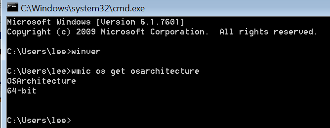
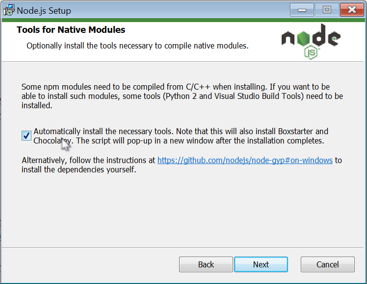
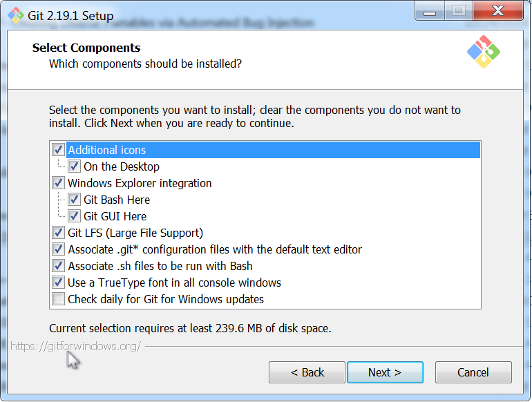

女票最近换了一份前端的的工作, 主要使用 vue 框架, 由于女票没有什么基础, 故准备写一份 vue 系列的前端教程, 凭我摸爬滚打混迹互联网掰手指一算, 差不多五年了, 默然回首, what the fuck?
对于前端, 我的基础基本上为零. 如果硬要说有啥的话, 大概有
所以, 零基础不要怕, 女票不怕, 如果我能看懂, 并写下来, 你就一定能看懂.
(1) 处给出了最新的长期支持版本(LTS, Long Term Support), 该版本为 10.13.0, 包括的 npm 版本为 6.4.1.
(2) 处有两个 tab 选项, 一个是 LTS 版本, 一个是当前最新版本.一般我们选择最新的 LTS 即可
(3) 处默认下载的是 x86 版本, x86 是什么版本? 就是常说的 32 位系统, x86 版本的软件既可以在 64 位系统上运行, 也可以在 32 位系统上运行, 而 x64 版本的软件只能在 64 位系统上运行. 可以打开命令行, 输入 wmic os get architecture 来查看系统位数, 如下图所示 
(4) 处给出了 32 和 64 位的软件, msi 的安装包具有安装向导, 就是你可以下一步下一步进行安装, 可以根据选择下载, 如果希望查看自己的系统版本
说了这么多, 到底点那个? well, 点击 3 下载即可. 但如果你是 64 位系统, 建议点击 (4) 中的 64 bit 下载. 我下载的是 x64 版本.
打开下载的 msi 安装包, 一路 next 狂奔到这里 
安装完成后, 打开命令行, 输入 node -v 即可查看 node 版本号.
到 这里 下载安装即可. 注意安装到下图这里是 要按照下图所示勾选
 然后一路 next 下去.打开命令行, 执行如下命令
git clone https://github.com/PanJiaChen/vue-element-admin.git cd vue-element-admin npm install --registry=https://registry.npm.taobao.org npm run dev
运行后, 会自动打开浏览器, 界面还是十分令人耳目一新的, 做的真他娘的漂亮, 我啥时候能有作者的十分之一功底?
➜ vue-element-admin (master) ✗ tree -a -L 1 -F . ├── .babelrc ├── .editorconfig ├── .eslintignore ├── .eslintrc.js ├── .git/ ├── .gitignore ├── .postcssrc.js ├── .travis.yml* ├── build/ ├── config/ ├── favicon.ico ├── index.html ├── node_modules/ ├── package-lock.json ├── package.json ├── src/ └── static/ 6 directories, 14 files
// login.js
export default {
loginByUsername: config => {
const { username } = JSON.parse(config.body)
return userMap[username]
},
getUserInfo: config => {
const { token } = param2Obj(config.url)
if (userMap[token]) {
return userMap[token]
} else {
return false
}
},
logout: () => 'success'
}
// index.js 使用 login.js 模块, login.js 向外提供的是默认导出的 API
// 这里使用 import 导入的时候, 可以随便指定一个不存在名称作为 default exports 的别名
import loginAPI from './login' // 可以使用 loginAPI.loginByUsername 取得对函数的引用
// 也可以使用 import {default as loginAPI} from './login'
p